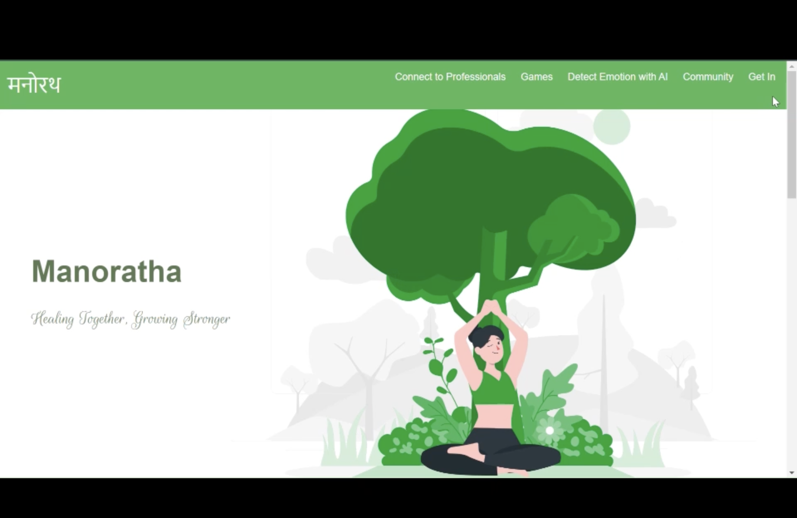
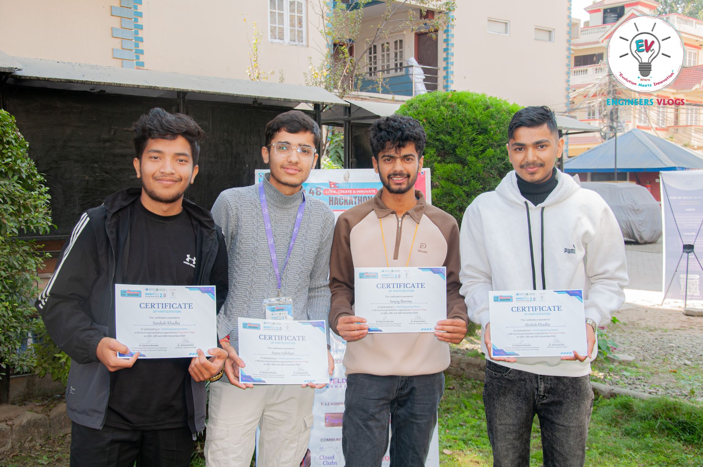

Manoratha (मनोरथा): A Mental-Wellness Platform Built in One Hackathon Sprint
"Healing Together, Growing Stronger" — a counselor-client portal, in-browser AI emotion detection, real-time community chat, and a set of stress-relief games, all shipped as one platform for Nepalese youth during OrbitHacks 2024 by team Iterators.

The actual Manoratha homepage — the four core modules (professional connect, games, AI emotion detection, community) are all one click away from the nav bar.
Overview
Manoratha started from a specific gap: mental-health support in Nepal is thin on the ground, and the youth who need it most often don't have an easy first step to take. Rather than building a single "counseling app," the team scoped Manoratha as a small ecosystem — a way to connect with a professional if you're ready for that, but also lower-friction options (a mood-tracking tool, a place to talk to peers, something to help you calm down in the moment) for people who aren't. That scope is ambitious for a hackathon timeline, and shaping it into four working modules built by different team members in parallel, rather than one deep feature done well, was the central engineering challenge of the project.
System Architecture
1. Professional Connect — PHP/MySQL Auth & Dashboards
The counselor-client portal is built as a set of PHP pages backed by MySQL, with separate registration, login, and profile flows for the two user types. Splitting "client" and "counselor" into distinct login and dashboard paths from the start — rather than one user table with a role flag bolted on — kept each side's profile fields and permissions simple to reason about independently, at the cost of some duplicated login logic between the two PHP scripts.
2. AI Emotion Detection — face-api.js in the Browser
A dedicated module uses face-api.js (a TensorFlow.js-based library) to run face detection, landmark tracking, expression classification, and age/gender estimation entirely client-side against the user's webcam feed. All five of the required models (tiny face detector, landmark net, recognition net, expression net, and age/gender net) load from local files before the webcam even initializes, and detection then runs on a 100ms interval, drawing bounding boxes, landmarks, and an expression label directly onto a canvas overlaid on the video. Running this fully in-browser — no frame ever leaves the user's device — was as much a privacy decision as a technical one: a mental-wellness feature that watches your face is one of the last places you want to introduce a server round-trip.
3. Community Chat — Node.js + Socket.io
Real-time chat rooms run on a small standalone Node.js server using Socket.io, kept deliberately decoupled from the PHP side rather than trying to bridge PHP sessions into the Node process. A connecting client is prompted for a display name, which the server tracks in a plain in-memory object keyed by socket ID; join, message, and disconnect events are broadcast to every other connected client. The in-memory user list is intentionally simple — it resets on server restart and doesn't persist chat history — a reasonable hackathon-scope trade for a feature whose main value is the feeling of "other people are here right now."
4. Stress-Relief Games & Magazines
A set of lightweight browser games — a breathing exercise, "Catch the Ball," "Pop to Shoot," and a match-based game — round out the platform as a low-commitment alternative to the counseling and chat features, alongside a library of curated PDF magazines on mindfulness and healthy living for users who'd rather read than interact.
Technical Challenges Overcome
- Four modules, four different runtimes, one deadline: PHP/MySQL, a standalone Node/Socket.io server, and a pure client-side TensorFlow.js module don't share a deployment story by default. Rather than trying to unify them into one server before the hackathon ended, the team kept them as separately-servable static/PHP/Node pieces linked together at the HTML level — a pragmatic call that traded a "clean" unified architecture for something that could actually demo end-to-end on time.
- Webcam permissions failing silently across browsers: Early testing showed the face-detection module would sometimes just show a black box with no error, because a getUserMedia rejection wasn't being surfaced anywhere visible. Adding explicit constraint objects, a support check before requesting the camera, and an alert on failure turned a silent dead end into an actionable error message during live demos.
- Deciding what "real-time" needed to mean for chat: An initial instinct was to persist chat history in MySQL so users could scroll back through past messages, but that would have meant threading the PHP auth/session layer through into the Node server under serious time pressure. Explicitly scoping the chat to ephemeral, in-memory, session-only messaging let the team ship a working real-time feature instead of a half-finished persistent one.
- Keeping a sensitive feature honest about its limits: Because face-api.js estimates emotion from expression alone, it was important the UI never overstate the AI's role — the tool is presented as a lightweight self-awareness aid (an age/gender/expression overlay a user can look at and reflect on) rather than anything resembling a diagnostic instrument, which shaped both the UI copy and the decision to keep all processing local rather than logging results anywhere.
Key Code / Hardware Components
The chat server's entire state model fits in a few lines, which is exactly what made it reliable to ship under time pressure — a plain object standing in for a session store:
const users = {};
io.on('connection', socket => {
socket.on('new-user-joined', name => {
users[socket.id] = name;
socket.broadcast.emit('user-joined', name);
});
socket.on('send', message => {
socket.broadcast.emit('receive', { message, name: users[socket.id] });
});
socket.on('disconnect', () => {
socket.broadcast.emit('left', users[socket.id]);
delete users[socket.id];
});
});The face-detection module loads its five face-api.js nets from local model files before touching the camera, then runs detection, landmarks, expressions, and age/gender estimation together on every interval tick — deliberately batched into one Promise.all and one detection call rather than five separate passes, which kept the in-browser frame rate usable on typical laptop webcams during the demo.

Key Takeaways
Manoratha's biggest lesson was about scope discipline under a hard deadline: every one of its four modules (auth portal, AI detection, chat, games) is individually simple, and that simplicity was a choice, not a limitation the team ran out of time to fix. Trying to make the AI detection "smarter," the chat "persistent," or the auth system "unified" across user types would each have eaten the entire remaining hackathon clock for a marginal improvement nobody would notice in a demo. The project also sharpened a principle worth carrying into any sensitive-feature build: when a tool touches something as personal as a user's face or emotional state, keeping the processing local and the framing modest is not just good privacy practice, it's what makes the feature trustworthy enough to actually use.